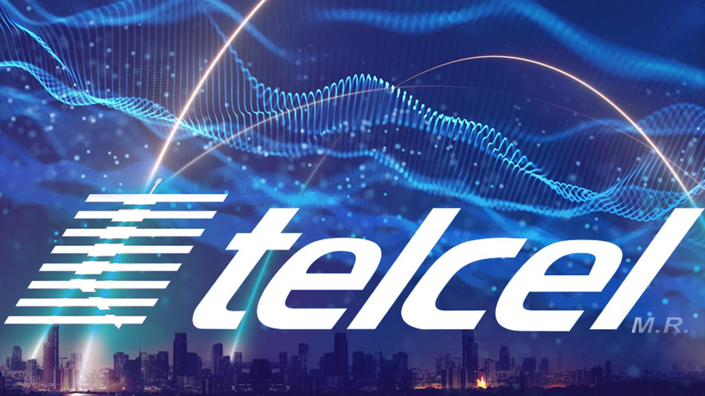

Gerencia Recepción de Infraestructura, Aplicativos y Sistemas VirtualizadosTelcel

VISIÓN
GARANTIZAR LA INTRODUCCIÓN DE NUEVOS PRODUCTOS
O SERVICIOS A LA RED CELULAR, CUMPLIENDO LOS REQUERIMIENTOS OPERATIVOS MEDIANTE UN ENFOQUE DE SERVICIO Y SATISFACCIÓN AL CLIENTE.